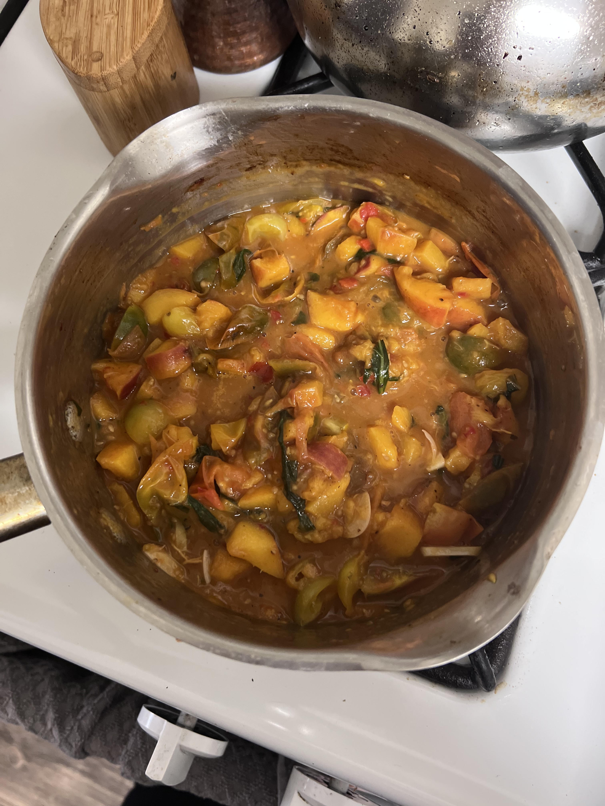

Eleni's Peach Pasta

Description
This recipe was sent to me by my dear friend Eleni. She's always been the
most creative person I know (and an amazing cook!) and was inspired by the
delectable peaches in southern California to create this beautiful dish.
Ingredients
- 2 peaches, chopped (you can keep the skin on!)
- Cherry tomatoes, cut in half
- 2 sliced garlic cloves
- Chopped basil
- Calabrian chilli paste
Steps
- Put some oil in a pan and saute the garlic over medium heat.
- Add the peaches and tomatoes once the garlic is soft.
- Saute a bit until soft, then add basil.
- Cook down until juices release, then add calabrian chilli paste
- Add a little pasta water to the sauce, then blend.
- Drain pasta, add a little butter, then mix with the sauce.
- Garnish with parmesean and basil.